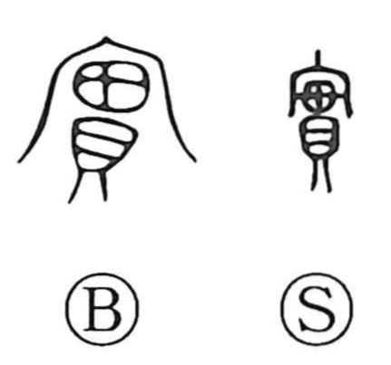

実

Kun: mi, minoru, michiru, makoto | On: jitsu
reality ・ truth ・ sincerity ・ fruit ・ seed ・ to bear fruit ・ to be full
Explanation
Originally written 實, the character combines the roof radical 宀—the roof of a mausoleum where ancestral spirits are venerated—with 貫, strings of shell currency threaded on a cord. Together they depict a corded bundle of coins offered at the ancestral shrine, an image of abundant, ample offerings. From this core sense arises the meanings “to be full, replete,” and by natural extension “to bear fruit” and “fruit” itself (as in 果実), referring to the seed and the covering that encloses it. When the heart is filled with right intention, the character also expresses “sincerity” and “truth” (as in 誠実), and thus “truly, really.”